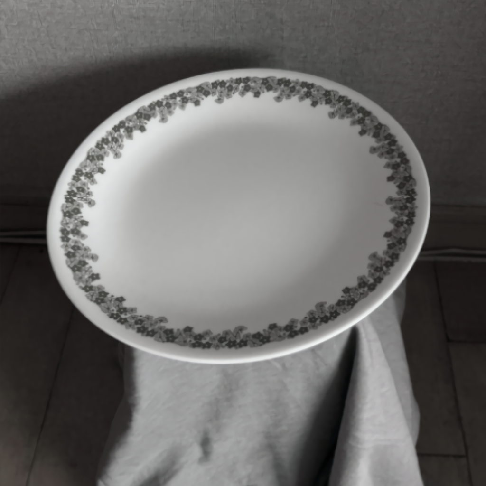
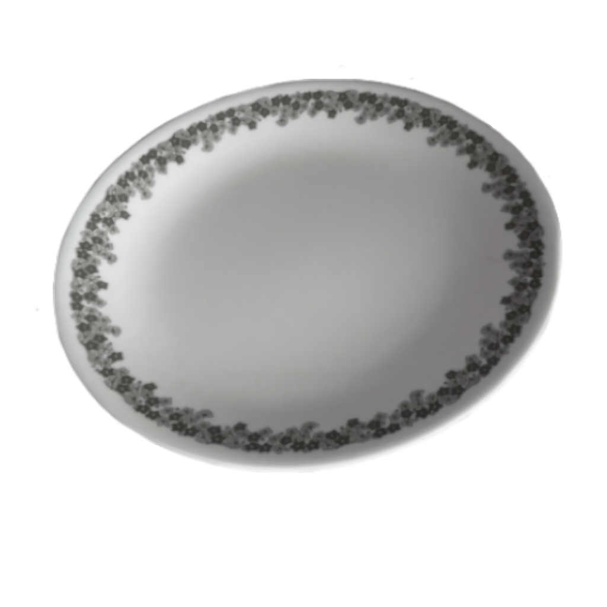

얼음의 빈 접시
생존



접시를 가볍게 눌러 보세요 ^
얼음같은 공간에 놓인 접시는
아직 중심을 잡고 있다.
얼음같은 공간에 놓인 접시는
아직 중심을 잡고 있다.
이 접시가 비어 있는 이유는
아직 올려두지 못한 것이
있기 때문이다.
당신은 무엇을 아직 올리지 못했는가?
← 돌아가기아직 올려두지 못한 것이
있기 때문이다.
당신은 무엇을 아직 올리지 못했는가?
다음 →